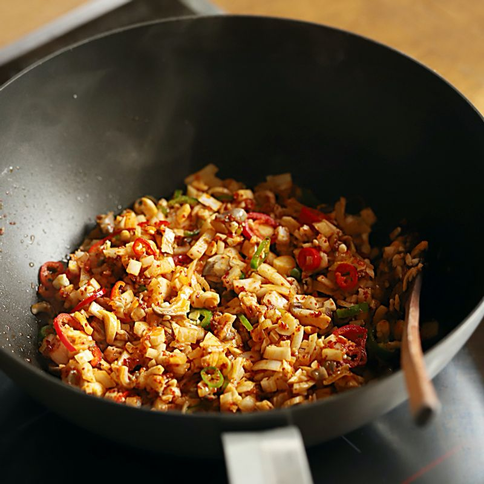

두부는 가로 세로 2cm 크기로 잘라주세요.
버섯과 양파는 굵게 다지고, 대파, 고추, 실파는 송송 썰어주세요.
달군 팬에 식용유를 넉넉히 두르고 대파와 마늘을 넣어 볶다가 고춧가루를 넣고 중약불에서 볶아주세요.
 양파, 버섯, 고추를 넣고 볶다가 양념 재료를 넣어주세요.
채수와 두부를 넣어 한소끔 끓인 후 녹말 물을 조금씩 넣어 농도를 맞춰 주세요. 불을 끄고 참기름을 둘러주세요.
접시에 현미밥과 마파두부를 담고 송송 썬 실파와 통깨를 얹어 맛있게 즐겨주세요.